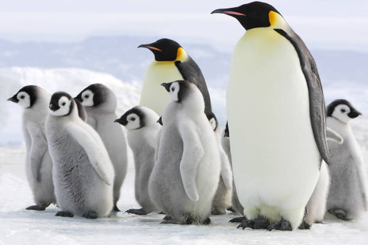

Pingüinos
Los pingüinos pertenecen a un grupo de aves que no vuelan, y están adaptadas a la vida marina. Su dieta está compuesta principalmente de peces, pero también puede incluir crustáceos como el kril y cefalópodos como el calamar. Los pingüinos poseen el vientre claro y el dorso oscuro, como sistema de camuflaje para confundirse en el agua con la claridad de la luz del sol, o la oscuridad del fondo marino. En tierra firme son poco ágiles y andan tambaleándose verticalmente, con las alas abiertas para mantener el equilibrio y adaptadas para la natación, donde pueden llegar a alcanzar los 50 km/h.
¿Sabías qué?
Los pingüinos no solo se encuentran en la Antártida. Es más, en Chile existen 9 especies diferentes que se reparten entre las costas chilenas y la península antártica.
Fotos de pingüinos


¿Te gustan los pingüinos y quieres visitarlos?
Quieres ver pingüinos, no sabes dónde ni cómo, haz clic para descubrirlo y poder vivir una experiencia única junto a ellos.